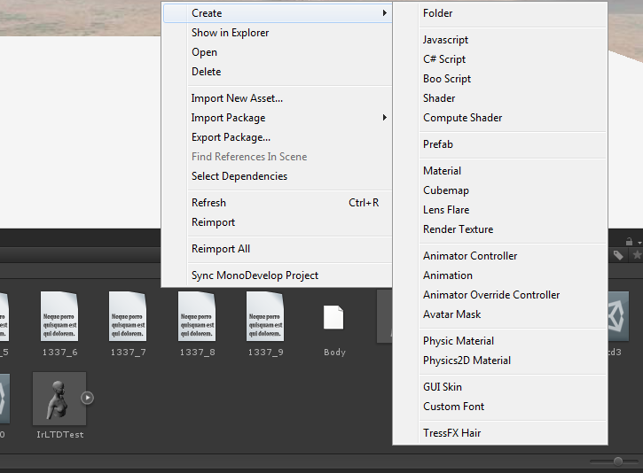
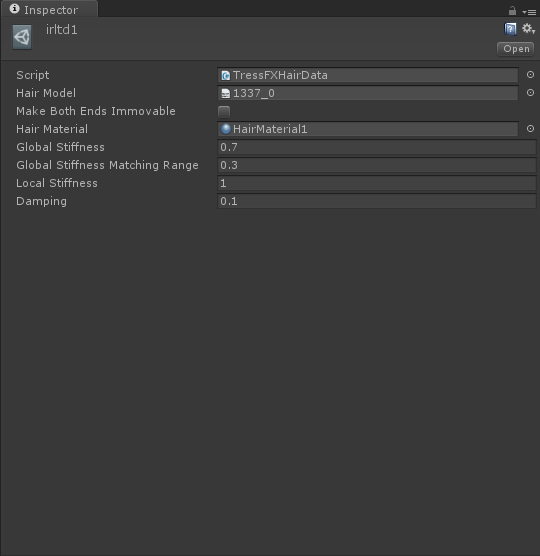
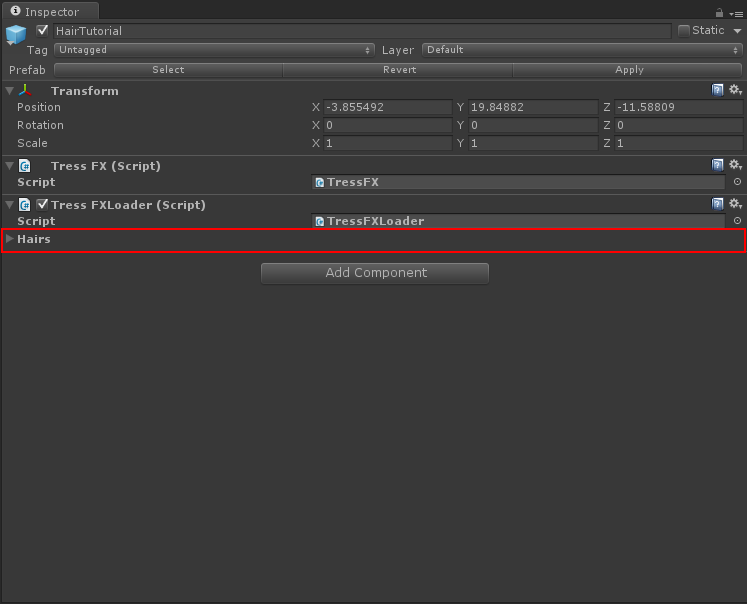
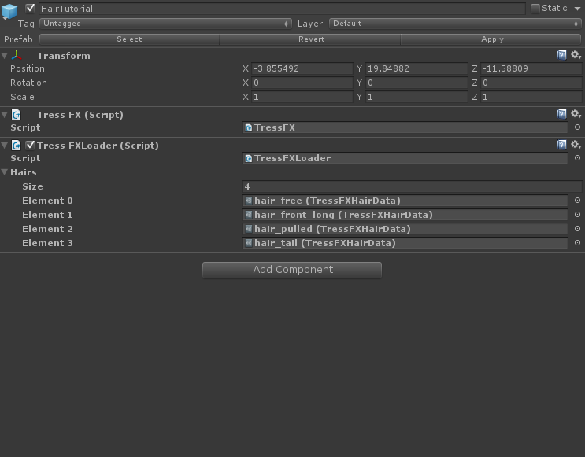
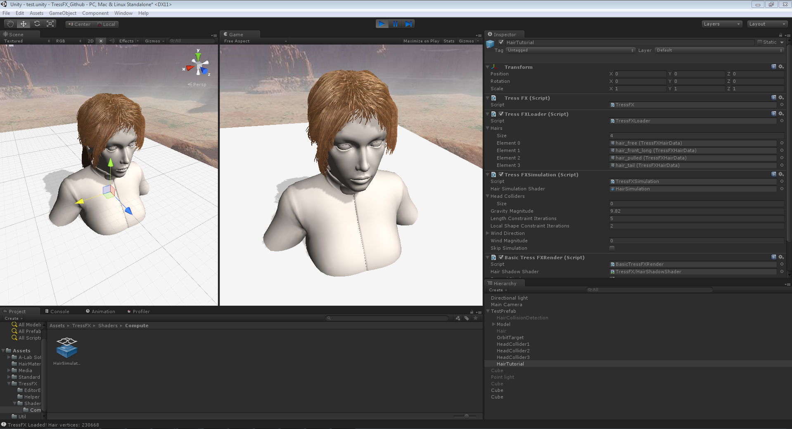

Ase to TFX file converter tutorial
For converting .ase files to tressfx compatible models you'll need a .ase hair spline and the asetotfx converter binary.
First, open the file called start.bat contained in the AseToTFX folder. It will start a windows command shell in the current directory.
Then, you have to call the asetotfx binary with 2 parameters, the first one is the .ase file and the second one is the output prefix.
Example: asetotfx.exe hair.ase hair
This will generate multiple files named hair_[n].txt. This files will get used in unity later.

After generating the hair files, move them to your unity project asset folder.
Now, let's generate the tressfx hair data assets. In unity, navigate to your hair data folder and right click in the asset browser.
Under "Create" select "TressFX Hair".

This will create a new TressFX Hair object. The next step is to add hair data and simulation values to it. Click on it and the inspector will open.

Fields:
- Hair Model: The text file which contains your hair data.
- Make Both Ends Immovable: If this is checked both ends of the hair will be immovable.
- Hair Material: Your hair rendering material. Example materials are available in the Git repo in the assets folder (HairMaterials folder)
- Global Stiffness: Stiffness value used in global shape matching for hair section. Values range from 0 to 1 and the closer to 1, the greater the global shape constraint is applied.
- Global Stiffness Matching Range: The range of vertices in a strand that are affected by the global shape matching for hair section. Values range from 0 to 1, with 1 meaning all vertices in the strand are affected.
- Local Stiffness: Stiffness value used in local shape matching for hair section. Values range from 0 to 1 and the closer to 1, the greater the local shape constraint is applied.
- Damping: Damping coefficient for hair section, which is used in the Verlet integration.
If you configured all your hair settings, go on with creating a new gameobject. In the TressFX folder you'll find multiple scripts.
Add the TressFXLoader Script to the gameobject. It'll automatically add the TressFX script, which is the main TressFX class.
Now drag&drop your TressFX Hair assets into the Hairs array marked red in this image:

It should then look like this:

That's the main work, you now can add the BasicTressFXRender script or any rendering script you want and the TressFXSimulation class.
For adding the simulation you'll need to set the "Hair Simulation Shader" property of the script, just drag&drop the shader located in TressFX/Shaders/Compute/HairSimulation.compute in there.
The BasicTressFXRender needs the property "Hair Shadow Shader" set to the shadow shader located in TressFX/Shaders/HairShadowShader.shader.
That's it, Your hair should now get rendered and simulated. You may change the other settings on the Scripts for example set the headcolliders (sphere colliders).
For more info about that checkout the TestPrefab in the TressFX Demo scene.
